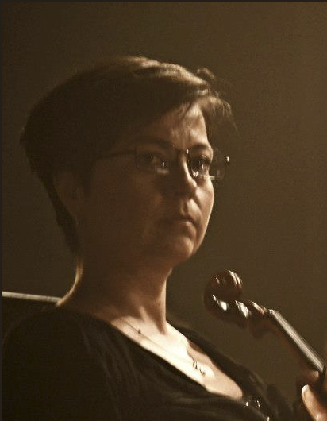

Orchestra Experience
Her path in music has included work with respected institutions such as the Kiev Opera Theatre, the Kiev Opera Theatre for Children and Youth, the Cairo Opera, the Malta Philharmonic Orchestra, and the School of Arts at the University of Malta.
